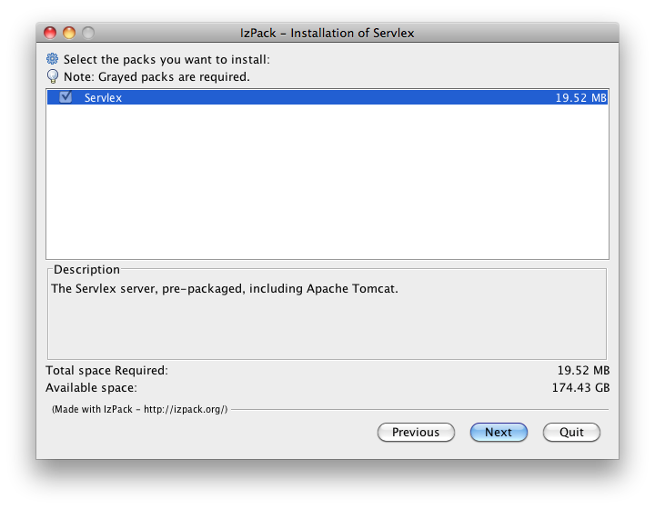

Installation Guide
Servlex can be installed either using a graphical installer, or by deploying the standalone WAR file in the servlet container of your choice. The former approach is indeed the easiest one, whilst the latter is the most flexible.
Installer
This method requires you to download a file, execute it, choose the directory where to install Servlex, and that is pretty much it! It comes with Tomcat pre-bundeled, so you do not have to worry about scarry details. The only pre-requisite is to have Java installed, with JAVA_HOME properly set. Please follow those instructions if you do not have Java yet (choose the latest JDK for your platform).
Download the latest installer from the download area, and execute
it. You can simply double-click on it, or from the command-line just execute:
java -jar servlex-n.n.n-installer.jar. Follow the instructions, that's it!
If you have a graphical interface (like on most desktops and laptops), it will
use friendly dialog boxes, and if you do not (like on most distant servers) it
will use a textual interface.

At this point, you might want to have a look at the available
configuration options before starting Servlex, for instance if you
want to change the port Servlex listen to (by default it is
19757). To
start Servlex, just execute bin/startup.sh (resp. bin/startup.bat on
Windows) and go to http://localhost:19757/manager/.
Now you can have a look at the User Guide.
WAR file
If you want to install Servlex into the servlet container of your choice, download the latest ZIP file from the download area. It contains a suitable WAR file and installation instructions. Once installed in your servlet container, you might want to have a look at the available configuration options as well.
If you install the WAR file, you will have to set up the repository for web applications. You will have to install the webapp manager as well, if you need it (by using the REST API or the command line tools). For reference, here is what the build process exactly does with the WAR file to bundle it with Tomcat, in order to create the installer:
- setup Tomcat class loader to support extension package JARs from the repo
mkdir [tomcat]/repomkdir [tomcat]/repo/.expath-webmkdir [tomcat]/profiling- create the file
[tomcat]/repo/.expath-web/webapps.xml, with the content detailed below - install latest
webapp-manager-n.n.n.xaw - install latest
expath-http-client-saxon-n.n.n.xaw(the manager depends on it) - install latest
expath-zip-saxon-n.n.n.xaw(the manager depends on it) - add some properties to
[tomcat]/conf/catalina.properties
Deploy the WAR
There are a lot of different Java EE Servlet containers out there. Each has its own ways to deploy a WAR file, and to be configured. This documentation describes how to install Servlex on Tomcat. If you use another one, you will have to adapt the steps. If you do, please share your experience on the EXPath mailing list.
The ZIP release file contains the WAR file to deploy (as well as the simple JAR
file, would you ever need it.) It contains also the JAR file providing the
repo-aware class loader for Tomcat, called servlex-loader. This class loader
is necessary because extensions for Saxon and Calabash can be installed as XAR
files, in the package repository. It is specific to Tomcat. To install it:
- copy the JAR file to
[tomcat]/lib/(it must be Tomcat's own lib/ directory) - create the file
[tomcat]/conf/catalina/localhost/servlex.xml, with the following content:
<Context path='/servlex'>
<Loader loaderClass="net.servlex.loader.RepoClassLoader"/>
</Context>
The ZIP release file also contains two scripts: xrepo.sh and saxon.sh. They
are convenience shell scripts to launch the command-line versions of resp. the
EXPath Repository Manager and Saxon. They are setup to work from within
[tomcat]/bin/. If you put them some place else, they are well documented, and
you should be able to adapt the few paths to accomodate your own configuration.
Setup the repo
You need an EXPath package repository in order to install the webapps managed by
Servlex. This is a regular repository, augmented with a private directory
dedicated to web applications: .expath-web/. Just create the repo directory,
and create the file .expath-web/webapps.xml within it, with the following
content:
<webapps xmlns="http://expath.org/ns/webapp">
<!--
Contains elements like:
<webapp root="myapp" enabled="true">
<package name="http://example.org/my/webapp"/>
</webapp>
-->
<webapp root="manager">
<package name="http://servlex.net/app/manager"/>
</webapp>
</webapps>
Then install the three following webapps (the Webapp Manager and both its dependencies):
webapp-manager-n.n.n.xawexpath-http-client-saxon-n.n.n.xawexpath-zip-saxon-n.n.n.xaw
In order to do so, you can use the REST deploy endpoint of Servlex. See the User Guide for comprehensive documentation, but you can use the following commands and adapt them as needed (I use HTTPie myself, but you can use CURL as well, as detailed in the User Guide):
http POST :19757/servlex/~rest/deploy/manager @webapp-manager-n.n.n.xaw
http POST :19757/servlex/~rest/deploy @expath-http-client-saxon-n.n.n.xaw
http POST :19757/servlex/~rest/deploy @expath-zip-saxon-n.n.n.xaw
Of course, if you do not want to use the web interface Webapp Manager, and install packages only through the REST endpoint, you do not have to install the manager (and none of its dependencies.)
Configuration properties
The properties added to the Tomcat configuration file are as following. Most of them are commented out, but they serve as a reference for what properties exist.
# Added by Servlex bundler for Tomcat
#
# The processors implementation class to use
org.expath.servlex.processors=net.servlex.saxon.Saxon
# The location of the repository
org.expath.servlex.repo.dir=${INSTALL_PATH}/repo
# Uncomment to have Calabash generating profiling data
# org.expath.servlex.profile.dir=${INSTALL_PATH}/profiling
# Uncomment to log (in trace level) the actual content of requests/responses
# org.expath.servlex.trace.content=true
# Uncomment to set the default charset of requests (if not set in a request)
# org.expath.servlex.default.charset=UTF-8
# Uncomment to set the (absolute) location of Saxon config file
# org.expath.servlex.saxon.config.file=${INSTALL_PATH}/repo/.servlex/saxon.xml
# Uncomment to set the XSLT version to use for XSLT wrappers
# org.expath.servlex.saxon.xslt.version=3.0
That (should be) it!
You can now access the Webapp Manager at (depending on the port number Servlex runs on): http://localhost:8080/servlex/manager/.
The following step is to have a look at the User Guide.